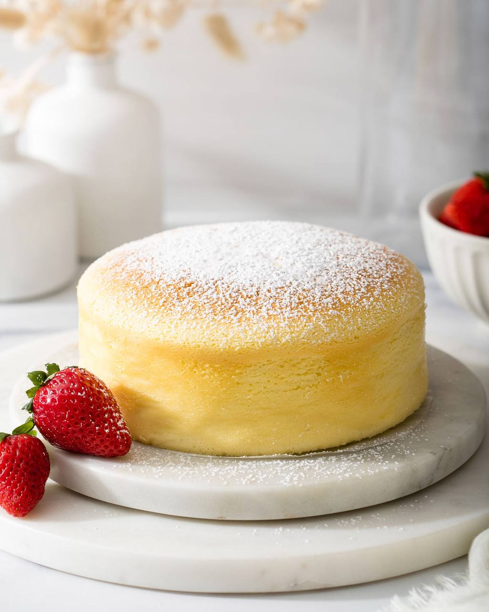
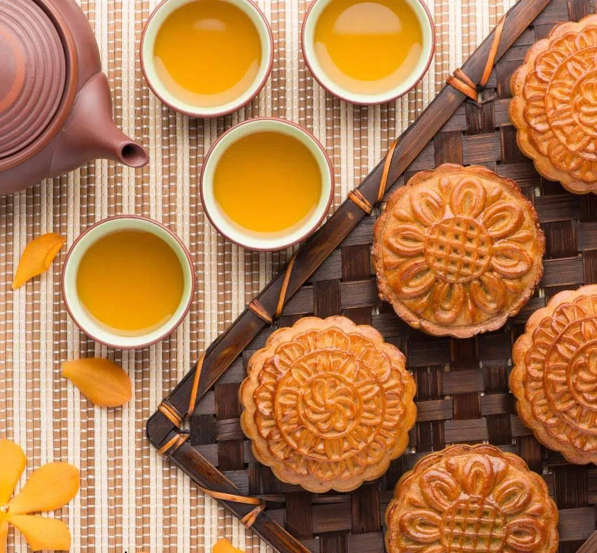
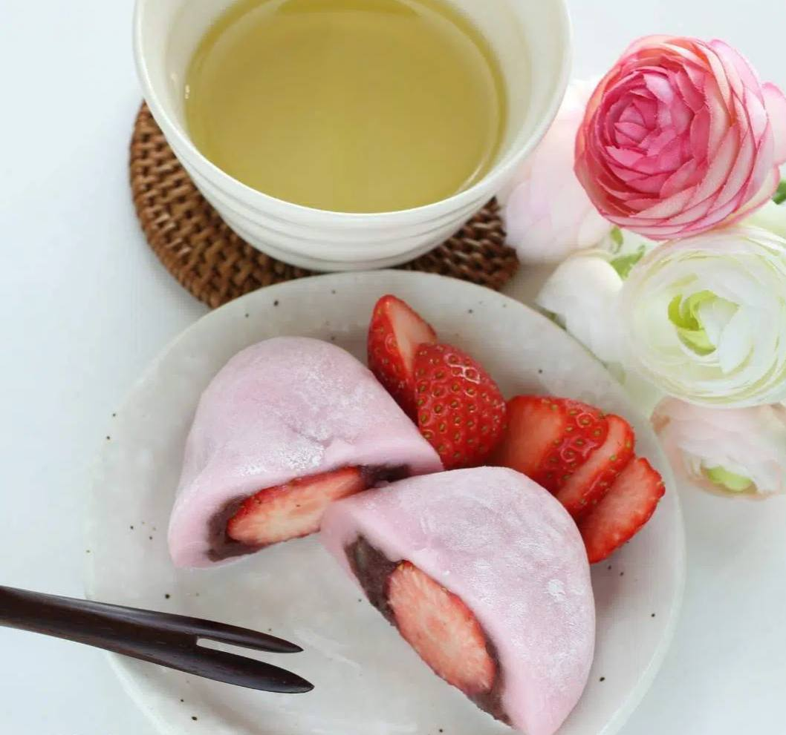
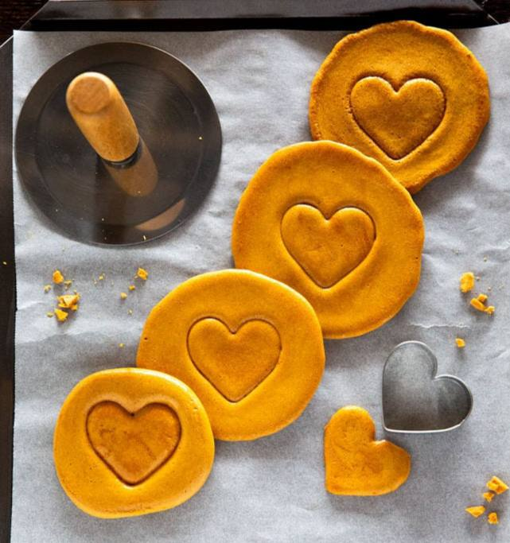

Asia is commonly known for its large rice and noodle culture, but there is so much more that must be experienced. Some of the most delicious and well-known desserts can be found throughout Asia. Whilst some of the desserts may include rice, many Asian countries make use of other local ingredients
Japanese cotton cheesecake has everything that makes tastebuds happy—a delicious rich cheesecake flavor and a bouncy, jiggly cotton soft cake-like texture
 Japanese cheesecake also referred to as Japanese cotton cheesecake, Japanese souffle cheesecake, or Japanese baked cheesecake is a crustless cheesecake that uses whipped egg whites and cake flour for a bouncy and cotton soft melt in your mouth texture. Japanese cheesecake has a sweet, vanilla, and subtly tangy flavor like a classic cheesecake.
Mooncake is a Chinese delicacy that is typically consumed during the Mid-Autumn festival. This sweet, or sometimes savory, cake is eaten whilst gazing at the moon during this festival, which is held on the fifteenth day of the eighth month, following the Chinese lunar calendar.
 The sweet dough, made from golden syrup, lye water, vegetable oil, and plain flour, is filled with a lotus paste. As these cakes have become more commercialized, various other fillings are used, such as red beans, fruit, and chocolate, which can be found all over the world.
Daifuku consists of a small round rice cake stuffed with a filling, most commonly anko, a red bean paste.
 Whilst there are many varieties, the anko daifuku is one of the most popular and is traditionally served with green tea. Other variations include azuki beans, mugwort, or even fruit, which has become popular in recent times. Various fruits such as mikan (small Japanese satsuma), strawberries, and grapes are delicately wrapped in a thin layer of mochi. In some shops, in between the mochi and fruit, a thin layer of anko is added.
Dalgona (달고나) is a type of honeycomb toffee which is made with sugar and baking soda. It is also known as “Korean sugar candy.” has been around for over 50 years in Korea and has gone by different names based on the region in Korea. Another common name being poppgi (뽑기), but now dalgona is the most common name
 this nostalgic sweet treat has been featured in many Korean dramas and variety shows. Most recently, it was highlighted in the global hit Netflix series Squid Game, drawing world’s attention to this humble, sweet little snack. Since then, the ‘Dalgona Challenge’ has been taking over social media, where users share their dalgona and poppgi-making journey using the hashtag #dalgonachallenge.